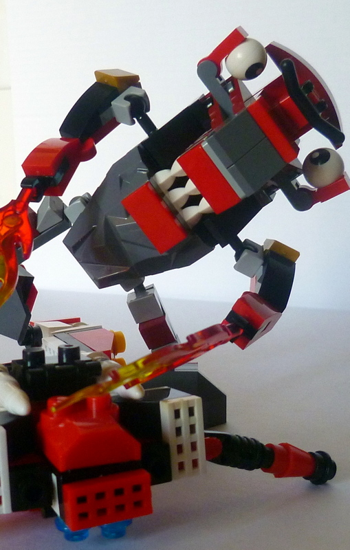

Siccome questo non è un film, non sono tenuto a tenervi in sospeso fino alla fine, quindi vi dirò subito la risposta.
NO.
E il motivo è presto detto:
Non sono compatibili al 100%.
A sinistra c'è un mattoncino lego originale. A destra, un Prico'. Come potete vedere, sono leggermente più alti. Questo rende parzialmente possibile l'impilamento, ma impossibile altre tecniche costruttive.
Altro esempio:
A sinistra il Prico', a destra il Lego.
A questo punto uno va a vedere la scatola e legge la scritta: Mattoncini compatibili tra di loro. E grazie, se non lo erano pure tra di loro? Vabbé. Per non parlare poi della scritta "Personaggio incluso".
Signori, non c'è nessuna minifig qui dentro. Scatola ingannevole.
Vabbé, se proprio vogliamo vedere il lato positivo (ma mìa tànt, eh) della cosa è che l'altezza non standard identifica i mattoncini come prodotti dalla BanBao che, fra i vari produttori di cloni, è uno di quelli che vanta i giudizi peggiori.
Ma il modello? qualcosa del robottino?
Beh, eccovelo, in tutto il suo splendore.
Bello, eh? ;-)
A parte gli scherzi: se i pezzi fossero stati realmente compatibili (così come lo sono stati quelli della Oxford/Kre-o e quelli della Enlighten) avrei apprezzato un po' di più il design: buffo, infantile ma con qualche tecnica SNOT qua e là e, tutto sommato, apprezzabile. Siamo ai livelli dei mini-transformers Kre-o, quindi design senza infamia e senza lode.
Tuttavia, il giudizio estetico è l'unica cosa vagamente positiva di questo modello.
Al di là del feeling della plastica (di bassa lega), e delle sbavature che ci sono in alcuni pezzi, devo notare le seguenti cose:
La presa dei pezzi non è uniforme: per attaccare alcuni pezzi ci vuole il martello, mentre altri fanno fatica a restare attaccati. Le due cerniere delle gambe arrivano smontate, e bisogna montarle; tuttavia, i perni sono di spessore lievemente differente l'uno dall'altro, per cui una si riesce a montare facilmente, l'altra bisogna forzarla con qualcosa di pesante. L'attacco dei razzi sul retro (si veda nelle foto successive) è forzato, e quindi illegale. Mettere un plate 2x1 no, eh? Le cerniere non stanno in posizione inclinata, per cui qualunque tentativo di mettere in pose un po' più ardite il nostro robottino risulta in una spaccata da ginnasta. Per fare un paragone, le cerniere dei Transformers Kre-o reggono molto meglio. (E non a caso la Oxford, fra i cloni, ha un certo nome).
Uff.... finalmente in piedi...
Insomma, se questa è la qualità Prico'.... beh, lasciate perdere. Ma proprio perdere.
Per finire, due parole parole da parte del nostro ospite nonché esperto in Microrobotica Legologica Applicata, Zorch Shuff.
Signor Zorch Shuff, vuole salutare i nostri lettori?
Gwaaaaaahhhhrrrrr!
Gwaaaaaahhhhrrrrr! Wa-tah! WA-TAH!
Gwaaaaaahhhhrrrrr..................

FINISH HIM!

You. WIN!
facezie a parte, e ringraziando Zorch Shuff per la sua abilità nel combattimento, riepiloghiamo la recensione:
il design del robot era quasi passabile, ma la fattura e la qualità dei pezzi consegnano il kit ad una fine degna di Mortal Kombat...
La morale quindi è: evitate i Prico', prendete qualcos'altro di serio e build on!
Post scriptum: Il rapporto esatto in altezza tra mattoncini BanBao e mattoncini lego (e compatibili-compatibili) è 7/6, stando a questo sito: in realtà, anche questa informazione non è del tutto esatta, perché pure i perni sono scalati verticalmente di 1/6 in più... per cui anche considerando questi rapporti non si ottiene quasi mai una buona compatibilità verticale.